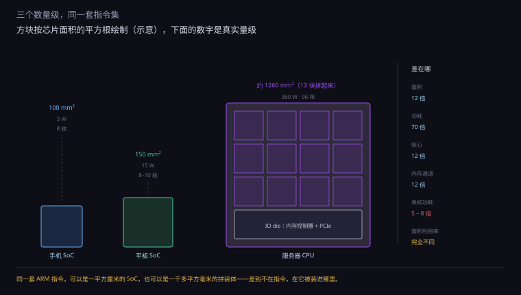
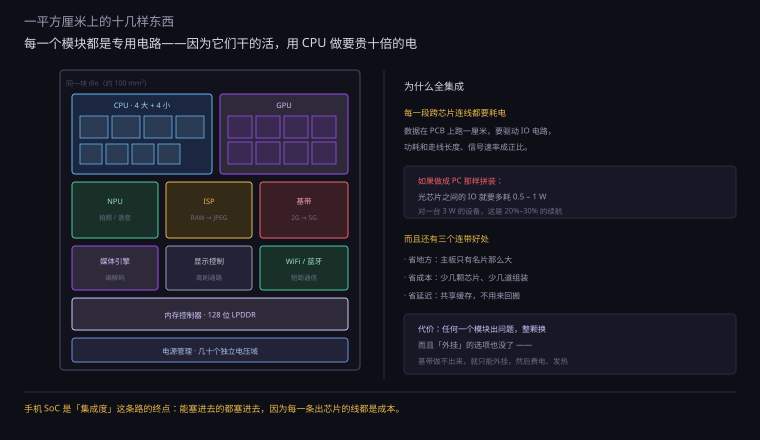
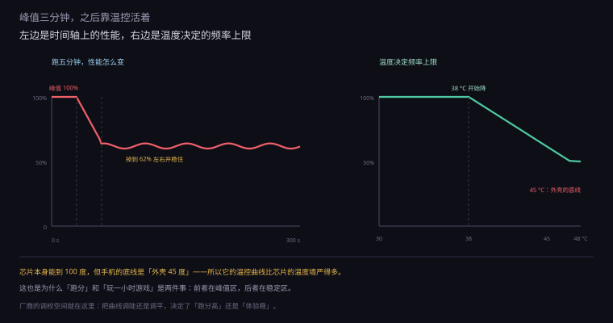
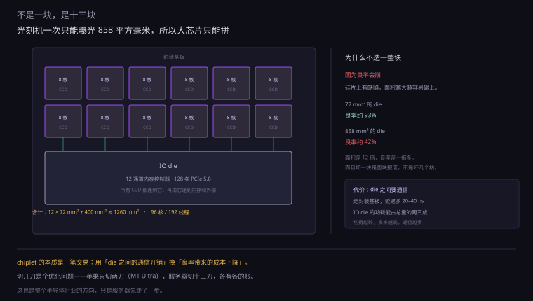
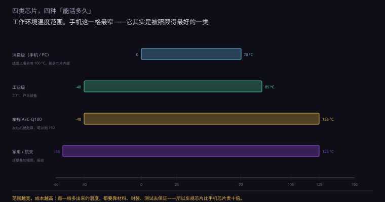
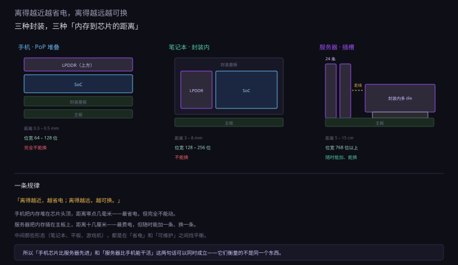

约 1.1 万字 · 6 张图 · 读完你能说清「同一个 ARM 核心」为什么能长成 三瓦的手机芯片、三百瓦的服务器芯片，以及为什么车规芯片又贵又慢
先看一组数字。同样是 ARM 的 Cortex-A 系列核心（或者苹果的同类核心）， 在三种设备里的工作状态完全不同：
| 场景 | 频率 | 单核功耗 | 散热方式 |
|---|---|---|---|
| 手机 | 2.0 – 3.5 GHz | 0.5 – 2 W | 被动，靠机身 |
| 平板 / 轻薄本 | 3.0 – 4.0 GHz | 2 – 5 W | 被动 / 小风扇 |
| 服务器 | 2.5 – 3.8 GHz | 5 – 10 W | 强制风冷 / 液冷 |
看清楚第二列：频率差别不大，但单核功耗差了五倍。 同样是 3 GHz 左右，手机核心只要 1 瓦，服务器核心要 8 瓦。
差在哪？三个地方：
一、规模。服务器核心的乱序窗口、缓存、执行单元都比手机核心大得多。 它每个周期能做的事更多，代价是更多的晶体管、更大的电容、更多的电。 「同频率下更宽」是服务器 CPU 提升性能的主要手段，因为频率已经提不动了。
二、电压。手机核心在 0.7 到 0.9 伏工作，服务器核心在 1.0 到 1.2 伏。 电压差 30%，动态功耗差 70%（P ∝ V²）。 服务器敢用高电压，因为它有风扇；手机不敢，因为机身会烫手。
三、工艺取舍。手机芯片用最先进工艺，追求「同功耗下最快」； 服务器芯片用成熟一些的工艺，追求「同面积下最稳、良率最高」。 两种优化方向，做出来的东西不一样。
但真正的分岔不在核心，在核心外面那一圈东西—— 内存怎么接、IO 有多少、要不要基带、坏了谁来兜。
这里有一段很少被提起的历史，它正好说明「架构不是决定因素」。
1990 年代，服务器市场是 RISC 的天下：Sun 的 SPARC、HP 的 PA-RISC、 IBM 的 POWER、SGI 的 MIPS、DEC 的 Alpha。 x86 只能做低端，进不了核心业务系统。
然后 x86 一步步爬上来：先是 Linux 和开源软件让「便宜的小机器堆起来」变得可行， 再是 Intel 和 AMD 把多核、大内存、虚拟化补齐。 到 2010 年代，x86 已经占了服务器出货量的九成以上。
那些 RISC 服务器呢？Sun 被甲骨文收购后淡出，Alpha 卖给康柏再卖给 Intel 后停产， PA-RISC 和 MIPS 退守小众。
而现在，ARM 又从手机那头爬回来了——云厂商的自研芯片大量用 ARM。 同一个位置，三十年里换了两轮主人。
每一次更替，赢的都不是「更好的架构」，是「更合适的成本结构」。 1990 年代 RISC 赢，是因为它能在同样的功耗下堆更多核； 2000 年代 x86 赢，是因为它的规模把成本压到 RISC 无法竞争； 现在 ARM 回来，是因为云厂商要摆脱 Intel 的定价权。 技术在变，逻辑没变。

手机芯片是集成度的极限。一颗一百平方毫米左右的硅片上有：
| 模块 | 干什么 | 为什么必须集成 |
|---|---|---|
| CPU（大小核） | 通用计算 | — |
| GPU | 图形、界面渲染 | 和 CPU 共享内存，省带宽 |
| NPU | 拍照增强、语音、翻译 | 实时性要求，必须本地 |
| ISP | 图像信号处理（RAW → JPEG） | 数据量大，出片不能等 |
| 基带 | 2G/3G/4G/5G 调制解调 | 外挂要多一颗芯片、多一份功耗 |
| WiFi / 蓝牙 | 短距通信 | 同上 |
| 音频 DSP | 通话降噪、音效 | 功耗极低，常开 |
| 显示控制器 | 驱动屏幕 | 高刷新率要专用通路 |
| 内存控制器 | 连 LPDDR | 位宽有限，必须近 |
| 电源管理 | 几十路电压域 | 省电的关键 |
这张表最能说明问题的是「为什么必须集成」这一列。 每一项的理由都不一样，但指向同一件事：分开就要多走路，多走路就要多耗电。
因为每一段连接都要耗电。数据在 PCB 上跑一厘米， 要驱动 IO 电路，而 IO 电路的功耗和走线长度、信号速率成正比。
一台 PC 里，CPU 到内存要过十几厘米的走线，功耗占总功耗的比例很小—— 因为 PC 有 65 瓦可以浪费。手机只有 3 瓦，每一毫瓦都要算。
算一笔：如果手机也做成「CPU + 外挂内存 + 外挂基带 + 外挂 WiFi」， 光是这些芯片之间的 IO 就要多耗 0.5 到 1 瓦。 对一台 3 瓦的设备，这是 20% 到 30% 的续航——所以必须集成。
手机 SoC 的封装方式叫 PoP（Package on Package，封装上封装）。
它的做法是：先做一层基板，焊上 SoC；再在 SoC 上方叠一层基板，焊上 LPDDR； 两层之间用一圈焊球连起来。整个封装的高度只有 1 毫米左右。
这样做的好处很直接：内存到芯片的距离缩短到零点几毫米， 走线最短、寄生电容最小、最省电。 而且省掉了主板上的内存区域，让电池能做得更大。
代价是散热变差。内存盖在 SoC 上方，挡住了往上散热的路， 而 SoC 下方是主板——两面都不通。 所以手机 SoC 的热只能从侧面和主板传导出去，这进一步压缩了散热能力。
还有一个代价：维修不可能。内存和 SoC 焊在一起， 任何一层坏了都要整个换。 「手机内存坏了」这种事，在维修店里的处理方式是「换主板」。
ISP（图像信号处理器）是手机 SoC 里最容易被忽略、但工作量最大的一块。
摄像头传感器输出的是 RAW 数据——每个像素只有红、绿、蓝中的一个分量， 而且带噪点、带暗角、颜色偏。要变成你看到的那张照片，要走这些步骤：
每一步都是对一整张图（几千万像素）做运算。 用 CPU 做，一张要几百毫秒、耗几瓦；用 ISP 做，几十毫秒、几百毫瓦。
更关键的是实时性：你按下快门到看到照片，中间不能等。 预览时每秒 30 帧，每一帧都要走一遍这套流程。 所以 ISP 必须是专用电路，不能是「跑在 CPU 上的软件」。

这句话听起来像悖论，但它是这一节最重要的一句。
服务器芯片 360 瓦，它有 360 瓦的预算可以分配： CPU 拿 250、内存控制器拿 50、IO 拿 60，随便怎么切都有富余。 浪费一点没关系，反正风扇能吹走。
手机芯片 3 瓦，它要把这 3 瓦切成几十份： 屏幕 1 瓦、CPU 0.8 瓦、内存 0.3 瓦、WiFi 0.2 瓦、传感器 0.1 瓦…… 每一份都要精确，多给一份，另一份就没了。
这就是为什么手机芯片里有一整套电源管理单元： 几十个独立的电压域，每个可以单独开关、单独调压。 不用的时候彻底断电，用的时候几十微秒内上电。
芯片本身能跑到 100 度。但手机的背面要贴在手上， 表面温度超过 45 度，人就会觉得烫。
所以手机的热设计目标不是「芯片不烧」，是「外壳不超过 45 度」。 这个约束比芯片的温度墙严得多——它把整机的散热能力锁死在 3 到 5 瓦。
手机厂商拿到芯片之后，还要做一件很重要的事：定温控策略。
同样一颗芯片，可以调成「前五分钟很猛、之后掉得厉害」， 也可以调成「一直温温的、但不会突然卡」。 这两种策略对应两种用户：
这就是为什么「同一颗芯片，不同品牌手机，游戏体验差很多」—— 不是芯片不同，是温控曲线不同。 也是为什么「跑分高」不等于「玩得爽」。
更细的做法是按场景切换：拍照时给 ISP 和 NPU 让电， 玩游戏时给 GPU 让电，待机时全关。 这套调度要写进固件，还要和游戏的负载特征匹配——是厂商调校功力的一部分。
| 设备 | 散热能力 | 约束来自 |
|---|---|---|
| 手机 | 3 – 5 W | 手持温度（45 °C） |
| 平板 | 8 – 15 W | 放在腿上也不能烫 |
| 轻薄本 | 25 – 35 W | 键盘温度、风扇噪音 |
| 游戏本 | 150 – 200 W | 风扇噪音、重量 |
| 服务器 | 300 – 500 W | 机房供电与制冷 |
看清楚这张表的第二列和第三列：散热能力的差别不是「技术」，是「约束」。 手机不是做不出更强的散热，是不能让外壳烫手； 服务器不是散热做得好，是它可以装一万转的风扇，因为没人在它旁边睡觉。
服务器插着电，功耗不是问题，效率才是（电费）。 手机靠电池，每一瓦都直接换成续航。
一台 4000 毫安时（约 15 瓦时）的手机，3 瓦能用 5 小时， 5 瓦只能用 3 小时。这就是为什么手机厂商对「待机功耗」斤斤计较到毫瓦级。
没有风扇，热只能靠三条路走：传导、对流、辐射。 手机把这三条都用到了极限。
芯片是一小块（一平方厘米），机身是一大片（上百平方厘米）。 如果热只堆在芯片那一小块，外壳那一点会烫得没法摸。 所以要先把热摊开。
手机里用的是一层石墨片（导热系数 300 到 1500 W/(m·K)， 比铜的 400 还高，而且极薄、可以贴在任何形状上）。 高端机用均热板（第 0.3.2 节讲过），效果更好但更厚。
摊开之后，热量分布在上百平方厘米的机身上， 表面温度就能从「烫手」降到「温热」。 这一步不增加散热总量，只改变温度分布——但对「手感」是决定性的。
没有风扇，只能靠空气自然对流。它的效率极低： 一平方米的表面，靠自然对流大约只能散掉 5 到 10 瓦。
手机的表面积大约 0.02 平方米（正反两面），理论上能散 0.1 到 0.2 瓦—— 远远不够。所以手机散热的主力其实是「传导到手上」和「短时加热空气」。
这也是为什么「手机玩游戏烫手」是必然的： 那 5 瓦的热必须有去处，而唯一的去处就是你的手。
| 材料 | 导热系数 | 厚度 | 用在哪 |
|---|---|---|---|
| 石墨片 | 300 – 1500 | 0.03 – 0.1 mm | 中低端机，贴在内屏后面 |
| 石墨烯膜 | 800 – 1500 | 0.02 – 0.05 mm | 旗舰机，更薄更均匀 |
| 均热板（VC） | 等效 5000 以上 | 0.4 – 0.8 mm | 游戏手机、旗舰 |
| 铝合金中框 | 约 200 | — | 结构件兼散热 |
单位是 W/(m·K)，数值越大越能导热（对比：铜是 400，空气是 0.026）。 石墨片的导热系数比铜还高，而且极薄、可以贴在曲面上——这是它统治手机散热的原因。
当温度到上限，芯片只能降频。手机的温控是一条曲线： 温度越高，允许的最高频率越低，一直到「能维持的最低性能」。
这解释了一个常见现象：手机跑分前 30 秒很高，之后掉一半。 不是跑分软件作弊，是芯片在按温控曲线工作。 「峰值性能」和「持续性能」在手机上差得最远，因为它的散热余量最小。

如果说 CPU 是「算得快」，基带就是「听得清」。而后者在工程上更难。
基带要做的是：把数字信号变成无线电波发出去，再把收到的微弱电波还原成数字信号。 中间要处理：
这五件事里的任何一件，都比 CPU 的一条指令复杂几个数量级。 而且它是实时硬性的：信号来了必须马上处理，晚一毫秒就丢包。
因为标准必要专利。5G 的标准是全世界一起定的， 但定标准的时候，谁的技术被写进去，谁就收专利费。
高通、爱立信、诺基亚、华为、三星都在这个池子里。 一部 5G 手机，光专利费可能占成本的 3% 到 5%。 这也是为什么苹果做了这么多年芯片，基带还是得买高通的（直到自研成功）。
这两个方案一直在拉锯：
| 外挂基带 | 集成基带 | |
|---|---|---|
| 功耗 | 高（多一颗芯片、多一段 IO） | 低 |
| 面积 | 占更多主板空间 | 省地方 |
| 成本 | 可以分开采购（高通方案） | 必须自己做或深度定制 |
| 散热 | 两个热源，更难压 | 一个热源，好管 |
| 典型 | 早期 5G 手机、部分旗舰 | 现在的主流方案 |
看清楚第三行：外挂的真正原因是「苹果/厂商自己做不出基带，只能买」。 一旦自研成功，立刻就会集成——因为集成的每一笔账都更划算。 这不是技术路线之争，是供应链的现实。
基带算得再快，信号发不出去也没用。而天线要在手机的金属边框里找地方，这很难。
物理上，天线的尺寸和波长成正比。700 MHz 的波长是 43 厘米， 四分之一波长天线也要 10 厘米。而手机的宽度只有 7 厘米。
所以手机用的是「电小天线」——尺寸远小于波长的天线。 它的效率很低（可能只有 30% 到 50%），带宽很窄，而且手一握就会失谐。 「死亡之握」不是段子，是电小天线被手掌挡住后的真实后果。
5G 更麻烦：毫米波（28 GHz）的波长只有 1 厘米， 天线可以做得很小（可以塞进一个阵列），但穿透力极差—— 一张纸、一只手就能挡住。
这就是为什么「5G 毫米波在室外很快、进屋就没信号」： 不是基站不够，是物理。 所以大多数地区的 5G 主力是 Sub-6（3.5 GHz 左右），不是毫米波。
平板是一个很有意思的中间态：它比手机大，比笔记本小； 没有风扇（大部分），但散热面积大得多。
一、更多电池。手机的 15 瓦时，平板可以做到 30 到 100 瓦时。 同样 5 瓦的功耗，续航直接翻几倍。
二、更大散热面积。机身面积是手机的四到六倍， 同样的热量摊在更大的表面上，温度就低得多。 所以平板可以持续跑 8 到 15 瓦，而手机只能 3 到 5 瓦。
三、更宽松的重量限制。手机 200 克是极限，平板 500 到 700 克可以接受。 多出来的重量可以用来放更大的电池、更厚的均热板、更好的屏幕。
iPad Pro 用 M 系列芯片，是一个很特别的做法： 把一颗为 15 到 20 瓦设计的芯片，塞进一台没有风扇的平板里。
它靠什么压住？更大的机身 + 更厚的金属背板 + 更激进的温控曲线。 实测结果是：短时性能接近 MacBook，长时性能会掉到六七成。 这不是「散热不行」，是「物理决定了它只能这样」。
这也解释了 iPad Pro 的定位困境：它的芯片是笔记本级的，但系统是平板级的。 硬件能力超过了软件能用到的范围——这是苹果自己的产品线在打架。
iPad Pro 的芯片已经和 MacBook 同级，但很多人买了之后还是回到笔记本。 原因不在硬件，在三个「软件的墙」。
一、文件系统。平板的文件管理是「应用沙盒」， 每个应用只能看自己那一块。而工作流的核心是「文件在应用之间流动」—— 这一步在平板上要绕很多弯。
二、多窗口。平板的分屏是「两个应用并排」， 笔记本是「随便开多少个窗口、随便叠」。做表格、查资料、写文档同时进行时，差别巨大。
三、外设与后台。接显示器、接键鼠、后台跑编译—— 这些在平板上要么不支持，要么支持得很别扭。
所以「平板能不能替代笔记本」这个问题，答案不在芯片， 在操作系统愿不愿意放弃「应用为中心」，转向「文件为中心」。 而这会破坏平板的易用性——它是一个两难。
从平板跳到服务器，是这一节最大的一次跳跃。因为服务器的目标函数换了一整套。
手机在意「点一下多久响应」。服务器在意「一秒钟能处理多少个请求」。
这两个目标导出的设计完全不同： 手机会把单核频率拉到最高（因为一次只干一件事）， 服务器会把核心数堆到最多（因为同时有一千个请求）。
一颗 96 核的服务器 CPU，单核频率可能只有 3.5 GHz， 比手机的 3.5 GHz 还低。但它同时跑 192 个线程， 总吞吐是手机的几十倍。
服务器要装下整个数据库、整个虚拟机集群。 所以它的内存不是「16GB」，是「6TB」。
| 手机 | 平板·笔记本 | 服务器 | |
|---|---|---|---|
| 通道数 | 1 – 2 | 2 – 4 | 12 × 2 |
| 最大容量 | 16 GB | 128 GB | 6 TB+ |
| 带宽 | 68 GB/s | 100–200 | 900+ |
看清楚「通道数」这一行：手机 1 到 2 个通道，服务器 24 个。 这不是「服务器内存更好」，是「服务器有地方插 24 条内存」。
一条 DDR5 是 64 位宽（加 ECC 是 72 位），12 个通道就是 768 位。 手机的一整个内存子系统，只有 64 到 128 位。
这是最容易被忽略、也最本质的一条。
手机死机了，重启一下，损失是「刚才那条消息没发出去」。 服务器死机了，损失是「一千个用户同时断线、数据库可能损坏」。
所以服务器芯片里有一整套可靠性、可用性、可维护性（RAS）的设计。 下一节细讲。
因为云上跑的是虚拟机。一台 96 核的服务器，可以切成 24 个 4 核的虚拟机， 卖给 24 个客户。每一台虚拟机都需要独立的核、独立的内存、独立的 IO。
如果只有 8 个快核，最多切 2 台虚拟机——卖不出价钱。
「核多」还带来一个隐性好处：调度更灵活。 一台虚拟机临时需要更多核，可以从空闲池里借； 而客户不会因为「隔壁那台机器在跑大任务」而被拖慢太多。
这也解释了为什么服务器 CPU 的单核性能往往不如同代的桌面 CPU： 它的设计目标是「总面积下最多核」，不是「单核最快」。 每个核的乱序窗口、缓存都可以小一点，因为「有 96 个」比「每个强 20%」更值钱。 这是一次明确的取舍，不是技术落后。
手机上「内存」是一个整体，访问任何地址的延迟都差不多。 服务器不是这样。
一台双路服务器有两个 CPU，每个 CPU 管自己那 12 条内存。 CPU 0 访问自己那半边内存很快（约 100 纳秒）， 访问 CPU 1 那半边要经过一条互连（约 150 到 200 纳秒）。
这个结构叫 NUMA（非统一内存访问）。它的存在意味着： 程序跑在哪颗 CPU 上、内存分配在哪一边，会直接影响性能。
所以服务器的操作系统要做「NUMA 感知调度」： 尽量让进程和它的内存待在同一个节点上。 做不好，性能可能掉 30% 以上——这是服务器调优里最常见的一项。
手机没有这个问题，因为只有一个节点。 「简单」本身就是一种优势——它让软件不用关心这些。

一颗现代服务器 CPU 的硅片总面积超过一千平方毫米。 这个数字很夸张——光刻机一次能曝光的面积上限只有 858 平方毫米。
所以它不可能是「一块芯片」。它是拼出来的。
它的结构大致是：
| 部分 | 数量 | 每块面积 | 干什么 |
|---|---|---|---|
| 计算 die（CCD） | 12 | 约 72 mm² | 每块 8 个核 + 32MB 缓存 |
| IO die（IOD） | 1 | 约 400 mm² | 内存控制器、PCIe、Infinity Fabric |
| 合计 | 13 | 约 1260 mm² | 96 核 / 192 线程 |
这个设计叫 chiplet（小芯片）。它的核心动机不是「性能」，是良率。
硅片上有缺陷（尘埃、晶格缺陷），缺陷密度大致是固定的。 芯片面积越大，碰到缺陷的概率越高。
粗略算：假设每平方厘米有 0.1 个致命缺陷。 一块 72 mm² 的 die，碰到缺陷的概率约 7%——良率 93%。 一块 858 mm² 的 die，概率约 58%——良率 42%。
面积差 12 倍，良率差一倍多。 而且坏掉的 die 是整块报废，不是「坏几个核」。 所以「把大芯片切成小的」能省下一大笔钱。
代价是die 之间的通信。12 个 CCD 要通过硅片上的走线（或者封装基板） 连到 IOD，这段通信的带宽和延迟，都比「同一块 die 内部」差。 所以 chiplet 是一种「用通信换良率」的交易。
12 个计算 die 不能直接互相通信，它们都得先连到 IO die。 这条互连叫 Infinity Fabric（AMD 的叫法），它的设计决定了一切。
三个关键指标：
带宽。每个 CCD 到 IOD 的链路要能喂饱 8 个核。 8 个核同时跑，每周期要读几十字节的指令和数据—— 如果链路带宽不够，加核就没意义，因为核在等数据。
延迟。跨 die 访问内存，比同 die 多一段路。 实测大约多 20 到 40 纳秒。对延迟敏感的程序（数据库、游戏服务器），这一段就是成本。
功耗。die 之间的走线在封装基板上，要驱动它同样要耗电。 这就是为什么服务器芯片的 IO die 功耗能占到整体的两三成。
所以「切」不是免费的。切得越碎，良率越高，但通信开销越大。 这是个 U 形曲线，最优点取决于工艺、面积、和你的产品要什么。
| 方案 | 切几刀 | 良率 | 通信开销 |
|---|---|---|---|
| 单块大 die | 0 | 低 | 无 |
| 2 块拼接（M1 Ultra） | 2 | 高 | 低（硅中介层） |
| 12 + 1（服务器） | 13 | 最高 | 中（封装基板） |
| 几十块小 chiplet | 几十 | 极高 | 高 |
这一节讲服务器芯片里那些「看不见但很贵」的设计。
内存会出错。不是「坏了」，是「偶尔有一个比特翻转」—— 宇宙射线、电源波动、老化，都可能造成。
消费级内存没有校验，翻了一个比特就翻了一个。 大部分时候没事（那个比特可能没用到），但一旦用到，就是数据损坏。
服务器内存带 ECC（纠错码）：每 64 位数据加 8 位校验， 能纠正 1 位错误、检测 2 位错误。 代价是内存容量少 12.5%（72 位里只有 64 位是数据），成本高一些。
对一台跑数据库的服务器，这个代价是必须付的—— 一次静默的数据损坏，可能几个月后才发现，而那时候备份也被污染了。
| 机制 | 干什么 | 代价 |
|---|---|---|
| 内存镜像 | 两份数据写两处，坏一处用另一处 | 容量减半 |
| 内存热插拔 | 不断电换内存条 | 电路复杂 |
| PCIe 热插拔 | 不断电换网卡、硬盘 | 需要专用控制器 |
| CPU 热插拔 | 高端服务器支持换 CPU | 极复杂，只有少数机型 |
| 机器检查架构 | 硬件错误上报给系统，触发隔离 | 需要全套固件配合 |
| 冗余电源 | 两个电源同时供电，坏一个不停机 | 多一个电源 |
这张表里的每一项，在手机上都不存在。 不是手机做不到，是手机不需要—— 手机死机重启的成本，远低于把这些机制做进去的成本。
三个原因，一个比一个现实。
一、容量和成本。ECC 要额外 12.5% 的存储位。 一条 16GB 的内存，做 ECC 就要多两颗颗粒。 对一台追求「每块钱多少 G」的消费级机器，这笔账划不来。
二、错误率够低。消费级的场景里，一次比特翻转大概率落在 「一个没在用的内存页」或者「一张图片的某个像素」上—— 用户根本发现不了。而服务器跑的是数据库，一个比特就是一条错误的账。
三、手机连「内存条」都没有。LPDDR 是焊在封装里的， 要做 ECC 就得在片内加校验位，代价是面积和功耗。 而手机的错误率本来就更低（电压低、没有插槽接触问题），所以不做。
最后一个极端是汽车。它的取舍和前三种都不一样。
温度：-40 到 125 °C。手机是 0 到 35 度（超过就降频或关机）， 车规要覆盖从黑龙江冬天到吐鲁番夏天，还要加上发动机舱的烘烤。
寿命：15 年。手机设计寿命 3 到 5 年，车规要 15 年、 几十万公里。这意味着所有的老化机制都要重新算一遍。
失效率：十亿小时几个 FIT。（FIT = 每十亿小时失效次数） 消费级芯片允许的失效率，比车规高几个数量级。
慢，是因为它用的工艺通常是成熟工艺（28nm、16nm）， 不是最先进的。原因有三：
贵，是因为：
所以一颗算力不如五年前手机的车规芯片，价格可能是手机的十倍。 这不是「坑人」，是「用钱买确定性」。
AEC-Q100 把车规芯片按温度分成四档。看这张表就知道「车规」这个词有多粗：
| 等级与环境温度 | 装在哪 |
|---|---|
| Grade 0 -40～+150 °C | 发动机舱 |
| Grade 1 -40～+125 °C | 车身、底盘 |
| Grade 2 -40～+105 °C | 座舱、娱乐 |
| Grade 3 -40～+85 °C | 部分车内模块 |
智能座舱的芯片通常是 Grade 2，因为它在车里、有空调。 而自动驾驶的计算芯片要在 Grade 1 甚至 Grade 0 的附近工作， 因为它可能装在靠近底盘的位置。
温度只是入场券。真正的门槛是 ISO 26262（功能安全）， 它要求芯片能证明「即使出故障，也不会造成危险」。
具体做法包括：
这些东西在消费级芯片里几乎不存在。 手机死机了重启，车机死机了可能撞人——两件事的后果差了几个数量级， 所以成本也差几个数量级。

把这一节的三种芯片放在一起看封装，会发现一条很清楚的规律。
| 手机 | 平板 / 笔记本 | 服务器 | |
|---|---|---|---|
| 内存位置 | PoP 堆在 SoC 上方 | 封装内，同一基板 | 主板上，插槽 |
| 内存位宽 | 64 – 128 位 | 128 – 256 位 | 768 位以上 |
| 芯片形态 | 单 die | 单 die | 多 chiplet |
| 可升级 | 完全不可 | 不可 | 内存、硬盘、网卡都能换 |
| 散热 | 被动 | 被动 / 小风扇 | 强制风冷 / 液冷 |
规律是：「离得越近，越省电；离得越远，越可换。」
手机把内存堆在芯片上方（PoP），距离最短、最省电，但完全不能换。 服务器把内存插在主板上，距离几十厘米、最费电，但可以随时加、随时换。 中间那些形态，都是在「省电」和「可维护」之间找平衡。
这也解释了一个看起来矛盾的现象： 手机芯片比服务器芯片「先进」，但服务器芯片比手机芯片「能干活」。 因为「先进」指的是集成度和能效，「能干活」指的是规模、内存和可靠性。 两个目标，两套设计。
举个具体的例子：同一个 ARM 核心设计，可以被三种厂商做成三种东西。
第一种：手机厂商。买 ARM 的核授权，和自研的 GPU、NPU、ISP、基带 一起集成到一颗 die 上，用最先进工艺，用 PoP 把内存堆在头顶。 目标是「一平方厘米、三瓦」。
第二种：云厂商。同样买 ARM 的核授权（或者用更宽松的架构授权自己改）， 但堆到 96 核、12 通道内存、128 条 PCIe，用成熟工艺、大封装。 目标是「一个机柜、一万瓦、跑一万个容器」。
第三种：车厂。用的可能是几年前的核设计， 成熟工艺（28nm），通过 AEC-Q100 Grade 2 认证， 配一套冗余和自检电路。 目标是「十五年、-40 到 105 度、不许出错」。
三颗芯片的核心可能是一样的，但封装、工艺、外设、认证完全不同。 价格差十倍，性能差十倍，寿命差三倍。 这就是「架构只是起点，产品才是答案」。

这一节讲了三类芯片，但背后有三条更通用的判断。
一、先看「它被装进哪里」，再看「它有多强」。 同一颗芯片，装进手机、平板、笔记本、服务器， 持续性能能差十倍。所以「某芯片跑分多少」这句话，不说装在哪台机器里，是没有意义的。
二、约束比技术更能决定形态。 手机不能装风扇，不是技术不行，是「外壳不能超过 45 度」这条约束。 服务器能装一万转风扇，也不是技术好，是「没人在它旁边睡觉」。 看到一种设计「很奇怪」时，先找它的约束，通常就说得通了。
三、「不能错」比「快」贵得多。 车规芯片算力不如手机，价格是十倍。 多出来的钱买的是：15 年寿命、-40 到 125 度、失效模式分析、ASIL D 文档。 凡是「出错的代价极高」的地方，都会长出这种又贵又慢的东西—— 航空、医疗、核电、金融交易，都是同一个逻辑。
| 维度 | 手机 | 服务器 | 车规 |
|---|---|---|---|
| 功耗预算 | 3 – 5 W | 300 – 500 W | 5 – 50 W |
| 首要目标 | 每瓦性能 | 吞吐与可靠性 | 确定性与寿命 |
| 散热方式 | 被动（靠机身） | 强制风冷 | 被动 + 导热 |
| 内存形态 | PoP / 封装内 | 插槽，24 通道 | 封装内 / 板载 |
| 可靠性要求 | 重启即可 | 不能停 | 不能错 |
| 典型工艺 | 3 nm | 5 nm / 6 nm | 28 nm / 16 nm |
把这一节压缩成六句话：
1. 规模（乱序窗口、缓存、执行单元的大小）、电压（0.8V vs 1.1V，动态功耗差 70%）、工艺取舍（追速度 vs 追良率与稳定）。
2. 因为每一段跨芯片连线都要驱动 IO 电路，都要耗电。手机只有 3 瓦，这些 IO 可能占掉 20%–30%，所以能集成的全集成。
3. 没有余量。两个约束：外壳温度不能超过 45 度（手感），电池容量有限（每一瓦直接换续航）。
4. 传导（摊到机身）、对流（自然对流，效率极低）、辐射（可忽略）。第二条实际上主要是「传导到手上」。
5. 温控曲线。温度到上限就降频，所以峰值只能维持几十秒，之后落到可持续的频率。
6. 外挂：功耗高、占地方、两个热源，但可以外购；集成：省电省地方，但必须自研或深度定制。主流集成是因为自研基带成熟了，集成的账更划算。
7. 吞吐（不是延迟）、内存容量与通道、不能停（RAS）。因为服务器同时跑上千个请求，堆核心数比拉高单核频率更划算。
8. 为了良率。72 mm² 的 die 良率约 93%，858 mm² 的约 42%——面积差 12 倍，良率差一倍多。代价是 die 之间的通信带宽和延迟。
9. 容量少 12.5%（72 位里 64 位是数据），成本更高。因为一次静默的数据损坏可能几个月后才发现，那时备份也被污染了。
10. 先进工艺的 15 年可靠性数据不足、SRAM 更容易受软错误影响、认证周期长达 5–7 年（那时工艺已换代）。